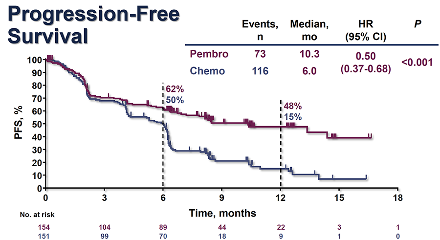
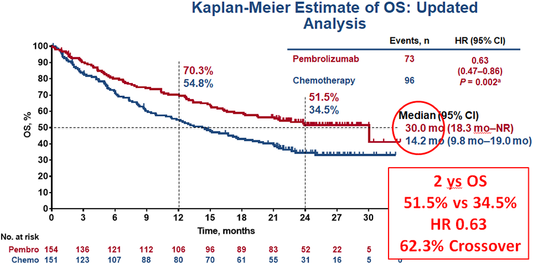
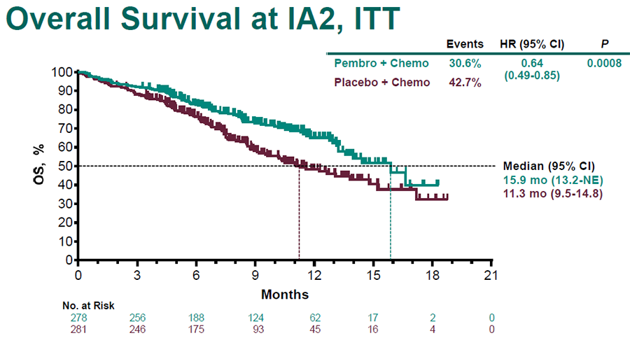
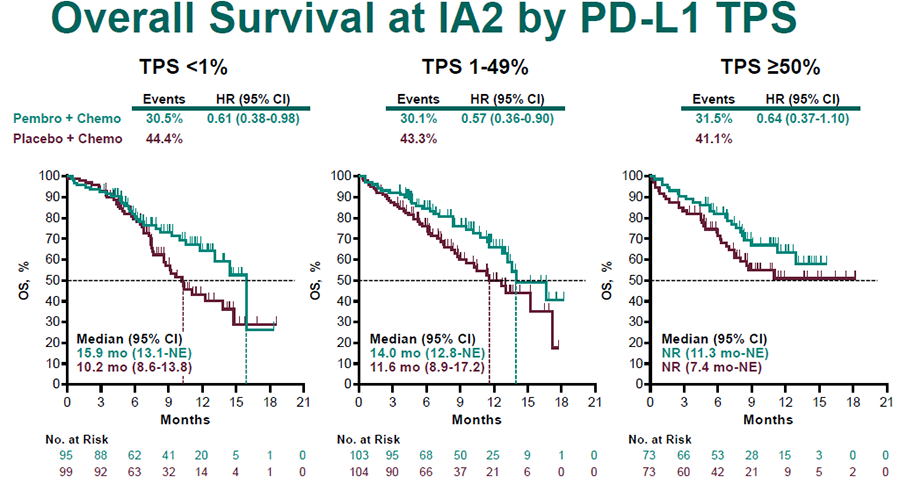

MÓDULO 4 : Tratamiento de la enfermedad avanzada en primera línea

4.4 Inmunoterapia de primera línea en Cáncer de Pulmón
Tratamiento de primera línea en pacientes con CNMP avanzado con expresión PDL1 ≥ 50%
El estudio KEYNOTE-024 estableció el papel de pembrolizumab como tratamiento de primera línea en pacientes con CNMP avanzado sin mutación de EGFR o translocación de ALK, cuyo tumor presenta una expresión de PDL1 ≥ 50%, detectado mediante IHQ con el Ac 22C3.
Este estudio randomizó a 305 pacientes con CNMP avanzado con expresión de PDL1 ≥ 50% a recibir pembrolizumab en monoterapia (200 mg iv c/ 3 semanas) hasta un máximo de 2 años, frente a 4-6 ciclos de QT estándar con un doblete de platino. Con una mediana de seguimiento de 11.2 m, se objetivó un beneficio en SLP (10.3 vs 6 m; HR 0.50, IC 95% 0.37-0.68), en TR (45% vs 28%). La mediana de duración de respuesta fue de 12.1 y de 5.7 m respectivamente.
Con un seguimiento de 25 m, se objetivó un aumento de SG (30 vs 14.2 m; HR 0.63, IC 95% 0.47-0.86).
La toxicidad ≥ 3 fue menor con pembrolizumab que con quimioterapia (27% vs 53%) y los resultados de calidad de vida también beneficiaron a pembrolizumab.
Importante: En base a los resultados del estudio KEYNOTE-024 actualmente Pembrolizumab constituye el tratamiento estándar de primera línea en pacientes con CNMP avanzado sin mutación de EGFR o translocación de ALK, cuyo tumor presenta una expresión de PDL1 ≥ 50%.


Asimismo se han realizado múltiples estudios con pembrolizumab y también con atezolizumab, nivolumab y durvalumab en distintos subgrupos de expresión de PDL1.
A continuación se resumen los estudios de inmunoterapia en primera línea con resultados maduros:
Pembrolizumab:
Estudio fase III KEYNOTE-042: Este estudio randomizó a pacientes con CNMP avanzado con expresión de PDL1 ≥ 1ª a recibir tratamiento con pembrolizumab o tratamiento con QT estándar. Los resultados preliminares demostraron un beneficio significativo en SG en los pacientes con expresión de PDL1 ≥ 50% (HR: 0.69, PS), mientras que el beneficio en SG no fue significativo para los pacientes con expresión de PDL1 0-49% (HR: 0.92, IC 95% 0.77-1.11).
Estudio fase III KEYNOTE-189: Este estudio randomizó a pacientes con CNMP avanzado de histología no escamosa, ECOG 0-1, sin mutación de EGFR o translocación de ALK, con independencia de la expresión de PDL1 ª a recibir tratamiento de QT con cisplatino o carboplatino y pemetrexed más pembrolizumab (200 mg dt) o placebo c/ 3 semanas por 4 ciclos, seguido de mantenimiento hasta 35 c con pemetrexed y pembrolizumab o pemetrexed / placebo. Se demostró un beneficio significativo en SLP y en SG en el brazo de pembrolizumab. SLP (HR: 0.52, IC 95% 0.43-0.64).
Este estudio randomizó a pacientes con CNMP avanzado de histología no escamosa, ECOG 0-1, sin mutación de EGFR o translocación de ALK, con independencia de la expresión de PDL1 ª a recibir tratamiento de QT con cisplatino o carboplatino y pemetrexed más pembrolizumab (200 mg dt) o placebo c/ 3 semanas por 4 ciclos, seguido de mantenimiento hasta 35 c con pemetrexed y pembrolizumab o pemetrexed/ placebo. Se demostró un beneficio significativo en SLP y en SG en el brazo de pembrolizumab. SLP (HR: 0.52, IC 95% 0.43-0.64).
En base a este estudio pembrolizumab en combinación con QT con platino y pemetrexed está aprobado como tratamiento de primera línea en CNMP avanzado no escamoso sin mutación de EGFR o translocación de ALK.
Estudio fase III KEYNOTE-407: este estudio randomizó a pacientes con CNMP avanzado con histología escamosa a recibir QT con carboplatino con paclitaxel c/ 3 semanas o con nab-paclitaxel semanal en combinación con palcebo o pembrolizumab 4 ciclos seguido de placebo o pembrolizumab de mantenimiento c/ 3 semanas hasta un máximo de 35 ciclos .La combinación de QT y pembrolizumab se asoció a una mayor TR (58.4% vs 35%, p= 0.0004) y a una mayor SG (15.9 m vs 11.3 m, HR 0.64, p= 0.0008). El beneficio en SG se produjo independientemente de la expresión de PDL1 (PDL1 < 1%: HR 0.61, PDL1 1-49%: HR 0.57, PDL1 ≥ 50%: HR 0.64).
En base a este estudio pembrolizumab en combinación con carboplatino y paclitaxel o nab-paclitaxel está aprobado como tratamiento de primera línea en CNMP avanzado de histología escamosa.



Nivolumab:
Nivolumab no está aprobado como tratamiento de primera línea y actualmente se está estudiando en primera línea en monoterapia y también en combinación con QT y con otros agentes inmunoterápicos.
El estudio CheckMate 026 randomizó 541 pacientes con CNMP con expresión de PDL1 ≥ 1% a recibir en primera línea nivolumab o tratamiento de QT estándar con doblete de platino. Nivolumab no prolongó ni la SLP (HR 1.15 IC 95% 0.91-1.45) ni la SG (HR 1.02, IC 95% 0.80-1.30). La toxicidad ≥ G3 fue menor en los pacientes que recibieron nivolumab con respecto a QT (18% vs 51%). Sin embargo, en un análisis exploratorio no preplanificado en base al TMB (tumor mutational burden) se objetivó un beneficio en TR y SLP con nivolumab en aquellos pacientes con alta TMB pero no así en los pacientes con medio-bajo TMB.
El estudio CheckMate 227 randomizó a los pacientes con CNMP en base al nivel de expresión de PDL1: si expresión de PDL1 ≥ 1% fueron randomizados a recibir: nivolumab más ipilimumab, nivolumab en monoterapia o QT.
Los pacientes con expresión de PDL1 < 1% fueron randomizados a recibir: nivolumab más ipilimumab, nivolumab más QT o QT.
En pacientes con alto TMB (de los 679 pacientes evaluables, 299 pac (44%), tenían alto TMB) nivolumab-ipilimumab, se asoció con una mayor SLP que con QT (HR 0.58, IC 97.5% 0.41-0.81) con una SLP a 1 año de 42.6% frente a 13.2%. El beneficio en SLP fue independiente de la histología y del nivel de expresión de PDL1.
Sin embargo, en los pacientes con bajo TMB no hubo diferencias de eficacia entre nivolumab-ipilimumab y QT (HR 1.07, IC 95% 0.84-1.35).
Durvalumab:
El estudio fase III MYSTIC evaluó durvalumab y durvalumab + tremelimumab vs QT en pacientes con CNMP avanzado. Los resultados preliminares del estudio no han demostrado un mayor beneficio con durvalumab ni con duravalumab + tremelimumab con respecto al tratamiento de QT. Sin embargo, en un estudio adicional exploratorio si se demostró un mayor beneficio con durvalumab- tremelimumab en los pacientes con alto TMB.
Atezolizumab:
Aunque no está aprobado como tratamiento de primera línea, los estudios de fase III sugieren beneficio al añadir atezolizumab al tratamiento de quimioterapia con un doblete de platino.
El estudio IMpower 150 randomizó 1202 pacientes con CNMP avanzado con histología no escamosa (no selección por PDL1), a recibir QT con carboplatino/paclitaxel combinado con atezolizumab, atezolizumab más bevacizumab o bevacizumab. No se permitió el crossover a la progresión. Se objetivó una mayor SLP y SG entre los pacientes que recibieron QT+ A+B con respecto a los que recibieron QT+ Bev. SLP: 8.3 vs 6.8 m , HR 0.59, IC 95% 0.50-0.70).
SG: 19.2 vs 14.7 m , HR 0.78, IC 95% 0.64-0.96,p = 0.02). SG 12 m: 67% vs 61%.
Los resultados de este estudio hacen que la combinación de QT con carbo/ paclitaxel + bevacizumab y atezolizumab sea próximamente una opción de tratamiento estándar de primera línea, si bien todavía no se dispone de la indicación de las agencias reguladoras.
En este estudio el beneficio de la combinación ABQT sobre BQT también se objetivó en el subgrupo de pacientes con mutación de EGFR o translocación de ALK.
El estudio IMpower 130 randomizó a pacientes con CNMP avanzado con histología no escamosa (no selección por PDL1), a recibir QT con carboplatino/ nabpaclitaxel vs el mismo esquema y atezolizumab, objetivando un aumento significativo en SLP y en SG al añadir atezolizumab. El beneficio se observó en todos los subgrupos independientemente de la expresión de PDL1.
SLP: 7 vs 5.5 m, HR 0.64.
SG: 18.6 vs 13.9 m, HR 0.79.
El estudio IMpower 132 randomizó a pacientes con CNMP avanzado con histología no escamosa (no selección por PDL1), a recibir QT con carboplatino/ pemetrexed con pemetrexed de mantenimiento vs el mismo esquema y atezolizumab seguido de atezolizumab y pemetrexed de mantenimiento, objetivando un aumento significativo en SLP y una tendencia no significativa en SG al añadir atezolizumab.
El estudio IMpower 131 randomizó a 683 pacientes con CNMP avanzado con histología escamosa (no selección por PDL1), a recibir QT con carboplatino/ nabpaclitaxel vs el mismo esquema y atezolizumab vs carbo/paclitaxel y atezolizumab. Los resultados preliminares demuestran una mejoría en SLP al añadir atezolizumab (SLP:6.3 vs 5.6 m , HR 0.70, IC 95% 0.60-0.85) , con mayor beneficio en los pacientes con expresión de PDL1 ≥ 50% y ausencia de beneficio en los pacientes con PDL1 negativo.
En el análisis interino no hubo diferencias en SG en la población global del estudio (14 vs 13.9 m) pero si en el subgrupo de pacientes con alta expresión de PDL1.
Resumen de tratamiento de inmunoterapia primera línea de CNMP avanzado:
En base a los resultados del estudio KEYNOTE-024 actualmente Pembrolizumab en monoterapia constituye el tratamiento estándar de primera línea en pacientes con CNMP avanzado sin mutación de EGFR o translocación de ALK, cuyo tumor presenta una expresión de PDL1 ≥ 50%.
En base al estudio KEYNOTE-189 pembrolizumab en combinación con QT con platino y pemetrexed está aprobado como tratamiento de primera línea en CNMP avanzado no escamoso sin mutación de EGFR o translocación de ALK.
En base al KEYNOTE-407 estudio pembrolizumab en combinación con carboplatino y paclitaxel o nab-paclitaxel está aprobado como tratamiento de primera línea en CNMP avanzado de histología escamosa.
Nivolumab y durvalumab no están aprobados como tratamiento de primera línea.
A la luz de los resultados de los estudios IMpower-150, IMpower132, IMpower131 e IMpower131, próximamente se dispondrá de aprobación para tratamiento de primera línea con la combinación de atezolizumab y quimioterapia.
Todavía quedan distintas cuestiones por resolver como: el papel de la inmunoterapia en combinación con QT o en monoterapia en los paciente cuyos tumores expresan PDL1 ≥ 50% o el papel del TMB para determinar si IT en monoterapia o en combinación.